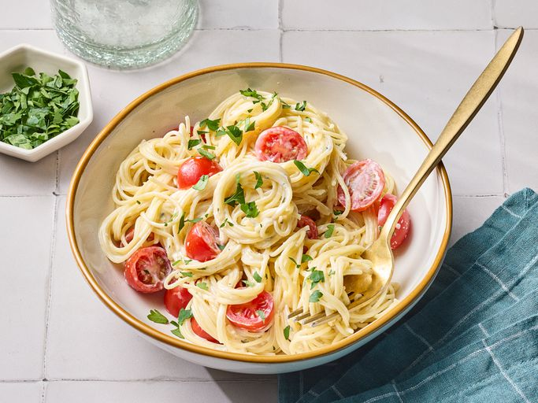

HOME
Boursin Cheese Pasta

Description
This is a quick and easy side pasta dish with only 3 ingredients! Add a protein like grilled chicken breast to turn it from a tasty side dish to a main course—or it can be a vegetarian main.
Ingredients
- 1 pound angel hair pasta
- 1 (5.2 ounce) package garlic and herb cheese spread (such as Boursin®)
- 3/4 cup grape tomatoes, sliced (Optional)
- Chopped fresh parsley for garnish (Optional)
- 1/2 cup reserved pasta water, or as needed
Steps
- Gather the ingredients.
- Bring a large pot of lightly salted water to a boil. Cook angel hair pasta in the boiling water, stirring occasionally, until tender yet firm to the bite, 5 to 7 minutes.
- Drain pasta, reserving 3/4 cup water ( you may not need it all).
- Pour 1/2 cup reserved water into sauce pan. Add Boursin cheese, whisking to combine until smooth. Add tomatoes and cook, no longer than 2 minutes. Add pasta back into the sauce. Garnish with fresh parsley.